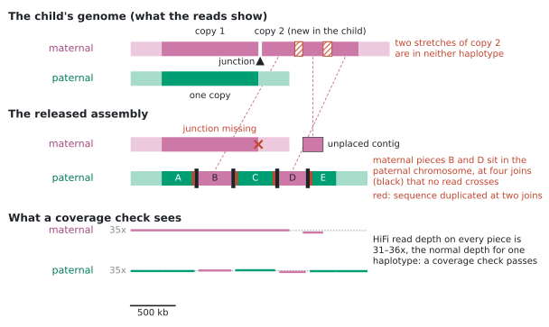
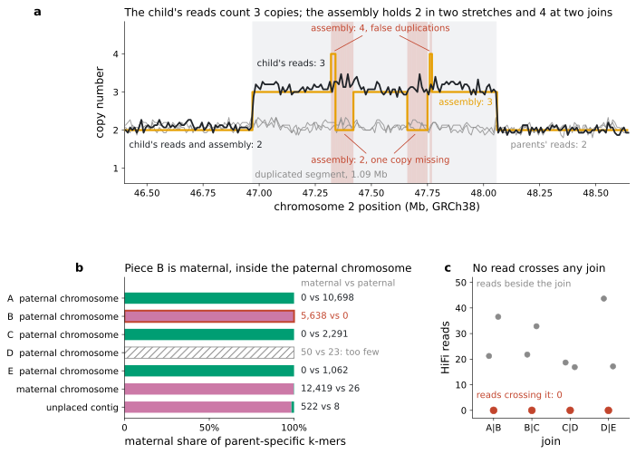
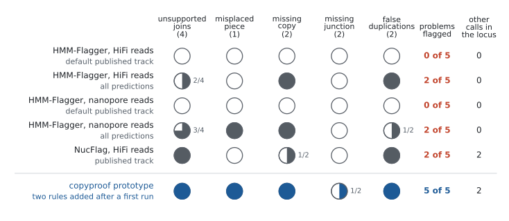
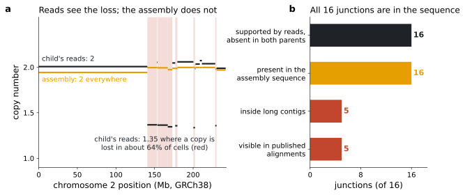
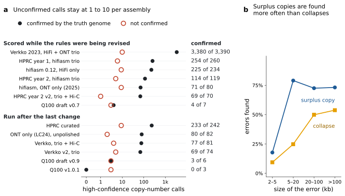
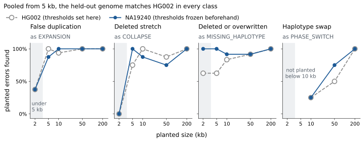

copyproofworking prototype
Genome assemblies can hold the right sequence in the wrong place. copyproof audits them for it.
Hundreds of human genomes are now released as assemblies, one sequence for each parental copy of every chromosome. Releases are checked by asking whether sequencing reads cover each position normally. A copy that is real but misplaced has normal coverage, so it passes. copyproof audits released assemblies for copies that are missing, doubled, joined without evidence or placed on the wrong parental chromosome. It uses the sample's own short reads and, where they exist, its parents' reads and long reads. A working prototype runs end to end on a laptop and has been tested on public data.
of 20,237 duplication boundaries in the HG002 truth genome draw a flag; the target was at most 2%
of high-confidence copy-number calls on 12 assemblies of HG002 are confirmed by the truth genome (1,199 of 1,258)
comparisons written down in advance hold on a second person, NA19240, with every threshold frozen
problems flagged at the HG01943 example locus (two rules were added after a first run); the release's own QC tracks flag 0 to 2
1The problem
A modern human genome assembly has two sequences for each chromosome, one inherited from each parent (two haplotypes). HPRC release 2 (462 haplotypes) and HGSVC3 (130) are mostly assemblies of 1000 Genomes participants. They are the basis of the human pangenome, of new variant catalogues and of benchmarks, so their errors spread downstream.
Releases are checked mainly by aligning reads back to the assembly and looking at coverage. Too few reads suggest a collapsed copy, too many a false duplication, odd patterns a misjoin. These checks catch many errors, but they have a blind spot: sequence that is real but sits in the wrong place. Duplicated segments and stretches shared by both parental chromosomes are hard to place. An assembler can then:
- collapse two copies into one;
- put a correct copy on the wrong parental chromosome;
- stitch pieces together where no read connects them;
- duplicate sequence at the stitch.
Every piece is still real sequence, so reads cover it at normal depth. Figure 1 shows all four at one locus.
maternal sequencepaternal sequencethe released assemblyreadsa problemcopyproof

- The maternal chromosome holds one copy and lacks the junction.
- Two pieces of copy 2 (B and D) were placed inside the paternal chromosome, at four joins (black) that no read crosses.
- A third piece is an unplaced contig, and two stretches are absent.
- The joins duplicate sequence (red; widths exaggerated).
2A real example: a new duplication in a 1000 Genomes child
HG01943 is a boy from the 1000 Genomes Peruvian (PEL) population. His genome was assembled by the Human Pangenome Reference Consortium with his parents' data (trio phasing). Public reads show a 1.09-Mb segment of chromosome 2 present three times instead of twice:
- read depth and k-mer counts give 3.05–3.13 copies;
- 31 PacBio HiFi reads and 35 Illumina read pairs or split reads cross the new junction;
- neither parent shows any of these signals.
It is a new (de novo) duplication on the chromosome he inherited from his mother. The released assembly scatters the second copy, as Figure 1 shows.
Each problem leaves a trace in public data that the published checks do not read: the copy number of k-mers along the chromosome, the parent of origin of each piece, and reads across each join (Figure 2).

When these five problems are scored against the QC tracks HPRC publishes for this genome, the default tracks flag none of them and the most sensitive flag two (Figure 3). copyproof flags all five, with two other calls in the locus (79 bp in all). This is not an independent test. The locus shaped the design, and two of copyproof's rules were added after its first run found three of the five. Genome-wide, the only scaffold piece it calls misplaced in this assembly is the known one.

MISJOIN calls (2.5 kb); copyproof, one BASE_ERROR and one MISSING_SEQUENCE (79 bp).3A second kind: cell lines are mixtures
1000 Genomes DNA comes from cell lines, which keep changing in culture. HG01103, from the Puerto Rican (PUR) population, carries a shattering and rejoining of chromosomes 2 and 14 (chromothripsis) in about 64% of its cells. The 16 new junctions are supported by 203 HiFi reads and 297 Illumina split reads or read pairs, and none appears in either parent.
Its trio assembly (1KGP PacBio, hifiasm) contains all 16 junctions, yet it misrepresents the event in three ways:
- At 11 junctions the long contigs follow the minority, unrearranged cells.
- At least one contig switches between the two cell populations, producing a sequence that exists in no single cell.
- Over the nine segments the rearranged cells lost (46.2 Mb), reads show 1.31–1.37 copies while the assembly holds two. A coverage model would probably call that real sequence a false duplication.
A review that reads only the published assembly-to-GRCh38 alignments sees 5 of the 16 junctions, because that file omits 75 of the 217 paternal contigs and the junction-side ends of five others (Figure 4).

Changes carried by part of the cells turn out to be common in the DNA behind released assemblies. Among copyproof's strong missing-allele calls on the HPRC releases of HG01943 and NA19240, 32% and 52% are alleles found in neither parent's reads, at read counts below one copy; on HG002 the share is 7%. The long reads those two releases were built from hold the allele beside the release's own sequence at 275 of 276 and 441 of 460 such events, as a change in part of the cells would. By its own reads, the release is not in error at those events. At 2 of the 736, nearly all long reads hold the allele, as an assembly error would.
A tool that audits releases therefore has to read the sequence itself, not only alignments. It also needs words for sequence that is real but present in only some cells, and for DNA samples that genuinely differ. copyproof does not yet have a class for changes in part of the cells, and HG01103 has not been run.
4What copyproof reports
copyproof is a standalone auditor for released assemblies, meant to complement coverage-based QC rather than replace it. For every assembly it reports issues: loci where the reads disagree with where, or how often, the assembly places a sequence. Each issue has one of twelve classes:
- Collapse
COLLAPSE: the reads hold more copies than the release, from a collapsed duplicate or a missing copy on the other haplotype - Extra copy
EXPANSION: the release holds one more copy than the reads support, a false duplication - Unsupported sequence
UNSUPPORTED,BASE_ERROR: sequence, or a short run of k-mers, that no read holds - Missing junction
MISSING_JUNCTION: reads join this position to a distant one, and no sequence in the release holds that junction - Missing allele or sequence
MISSING_ALLELE,MISSING_SEQUENCE: reads carry an allele, or run into sequence, found nowhere in the release - Missing haplotype
MISSING_HAPLOTYPE: several nearby alleles of one haplotype are absent from the release - Wrong parent
PHASE_SWITCH,MISPLACED_PIECE: a stretch, or a whole scaffold piece, carries the other parent's k-mers (needs the parents' reads) - Unsupported or false join
UNSUPPORTED_JOIN,FALSE_JOIN: no long read links a gap, or sequence at a join is held by neither short nor long reads (needs long reads) - Cannot assess
cannot_assess.bed: about 11% of a genome (satellites, rDNA, large high-identity arrays, extreme GC), where copyproof says so rather than guessing - Not yet: a change in part of the cellsa loss or gain carried by a fraction of the cells has no class, and falls among the depth anomalies
Each issue comes with a confidence (high or low), a score, a one-sentence summary for a curator, the numbers behind it and an evidence card (Figure 5). It stays an issue until someone has looked. One copy too many in the assembly and one copy too few in the DNA that was read are the same observation, so an issue becomes an error only when the assembly's own long reads agree.
![An evidence card drawn by copyproof for issue cp000031, class MISPLACED_PIECE, on HG01943 haplotype 1 sequence CM089354.1 from 47,396,531 to 47,765,590. Top track: copies implied by the reads for k-mers the release holds 3 or 4 times; about 3 across the piece, rising to about 5 for the 4-copy k-mers just right of it. Middle track: hapmer sites, maternal-only sites up inside the shaded piece and paternal-only sites down on both sides. Bottom track: gaps (N) at both ends of the piece and one missing allele.](assets/fig_cp_card.png)
5How it works
copyproof reads the sequence itself and needs no alignment of short reads to the assembly. Its inputs are public for almost every released sample:
- the sample's own short reads: for 1000 Genomes participants, the NYGC 30x Illumina reads, which come from a DNA preparation independent of the assembly's (FASTQ, or CRAM through samtools);
- for the parent-of-origin check, both parents' short reads (602 trios in the NYGC set);
- for the long-read audit, an alignment of long reads to the assembly, fetched region by region through its index, so it can stay remote.
![Four tiles: 1 count copies, comparing each k-mer's count in the reads with its copies in the whole release; 2 missing sequence, read k-mers found in no sequence of the release, placed by the reads' flanks; 3 parent of origin, k-mers from one parent only along each haplotype; 4 long-read audit, long reads at every join and at every stretch short reads lack. Arrows lead to a box: combine into issues with a class, confidence, score and evidence card; outputs per assembly: issues.tsv, summary.json, cards, cannot_assess.bed, run.json.](assets/fig_cp_method.svg)
On a 10-core laptop, counting a 30x read set takes 5 minutes from FASTQ (30 from CRAM) and 20 GB of memory, once per sample. Scanning a diploid assembly takes 1.5 minutes, and the checks after it about 7 to 20 minutes, plus 10 to 20 for the long-read audit.
What is new. Each check has a precedent:
- Merfin compares read and assembly k-mer copy number;
- HMM-Flagger and NucFlag read coverage and base signals;
- GAVISUNK validates duplications with ultra-long nanopore reads;
- Inspector and CRAQ use clipped reads;
- Merqury measures completeness and phasing genome-wide;
- truth-based comparison scores assemblies against the HG002 benchmark.
copyproof contributes the combination. It counts copies against the whole release rather than one haplotype, audits every scaffold piece and every join, and lists what it cannot assess. It reports one list of issues with evidence cards, and its precision and sensitivity are measured class by class against a truth genome.
6How well it works
A detector is only useful if it rarely raises false alarms, so validation was ordered by what could stop the project (Figure 7). Six of the seven rungs have been run, two of them in part. The scan of whole releases has not started.
![A staircase of seven validation rungs with results. 0 synthetic genomes: done, 38 tests pass. 1 two known cases: in part, HG01943 5 of 5 with two rules added after a first run, HG01103 not run. 2 planted errors: done, from 5 kb 46 of 47 false duplications, 25 of 28 deletions, 34 of 40 lost haplotypes; long reads 23 of 24 inversion breakpoints. 3 false flags on the truth: passed, 0.11 percent of 20,237 duplication boundaries against a target of at most 2 percent. 4 real assemblies with labels: done, about 95 percent of high-confidence calls confirmed. 5 agreement without truth: in part, NA19240 all 7 comparisons hold. 6 release scan: not started.](assets/fig_cp_ladder.svg)
On the truth genome: few false flags
copyproof was run on the T2T-HG002 Q100 truth genome with HG002's 36x short reads. Every flag there is a false alarm, a residual error of the truth, or a real difference between DNA samples. With short reads alone it reports about 25 high-confidence issues per haplotype. There is an issue within 5 kb of 0.11% of the 20,237 duplication boundaries, against the design's target of at most 2%. With long reads added, copyproof sorts the 1,123 runs of assembly k-mers that no short read holds. The long reads hold 957 of them, and of the 119 they do not hold, 115 lie on the list of known issues that the truth genome's curators publish.
On thirteen assemblies of the same person
Thirteen HG002 assemblies, three of them earlier drafts of the truth genome, were run with the same reads and scored against the truth genome's k-mers, without alignment (Figure 8). About 95% of high-confidence copy-number calls are confirmed, 1,199 of 1,258 in twelve assemblies. The thirteenth, Verkko 2023, holds 150 Mb of surplus sequence and adds 3,380 of 3,390. The share is about the same in the six assemblies scored while the rules were still being revised (95.7%, without Verkko 2023) as in the six run after the last change (94.7%). All are assemblies of one person read with one set of reads, so this is not a held-out test.
The 69 unconfirmed calls, placed in the truth genome and sorted, are:
- 27 on Epstein–Barr virus or mitochondrial sequence, which a cell holds in other numbers than a genome lists;
- 24 on real differences that the scoring rule did not count;
- 18 with only the reads behind them, 15 of those on acrocentric short arms.
None lies on a known issue of the truth genome.

On errors planted in two genomes
Known errors were planted in the truth genome (111 edits) and, for the held-out test, in the NA19240 release, and both were read with real short reads (Figure 9). From 5 kb:
- false duplications are found at 46 of 47 in HG002 and 47 of 48 in NA19240;
- deletions, as a collapse on the homologue, at 25 of 28 and 28 of 31;
- deleted or overwritten haplotype stretches, as a missing haplotype, at 34 of 40 and 41 of 43.
At 2 kb, false duplications (3 of 8) and collapses (0 of 8) are mostly missed in both genomes, while the missing-haplotype call still finds 5 of 8 and 8 of 8.
An inversion leaves no missing k-mers when the other haplotype is right, so short reads alone cannot report it. With real HiFi reads realigned to the planted genome, copyproof reports FALSE_JOIN at 23 of the 24 inversion breakpoints and at 21 of 36 joins left by a deletion (16 of 20 from 10 kb, none at 2 kb). All these calls are of high confidence, and none lies away from an edit. They rest on the aligner's secondary records, and without those the same audit finds 8 of the 24 breakpoints.

On a second person, with every threshold frozen
The NA19240 release was then run at the thresholds of the commit that produced the results above. The scores, their denominators and the predictions from HG002 were written down, committed and pushed before the run. No truth genome exists for her, so two other assemblies of her from HGSVC3, made from other reads and phased without the parents (Verkko and hifiasm), stand in for one. On HG002 that stand-in confirmed 62% to 85% of the issues where the truth confirmed 96%, and it cannot judge collapses.
All seven comparisons hold: none of NA19240's shares is lower than predicted at the 5% level (Figure 10). The narrowest margin is for surplus copies of 5 kb or more: 64 of 76 found, against a predicted 117 of 127 (p = 0.066). A real drop of a few points cannot be excluded. Of NA19240's 81 high-confidence copy-number issues, the Verkko assembly alone confirms 75 and neither assembly 6. On another assembly of the same person, phased without the parents, the hapmer audit calls 13 high-confidence phase switches; trio-phased haplotypes confirm 7 and contradict none.
![Dot plot of seven comparisons, each with the HG002 prediction and the NA19240 result and 95 percent intervals: calls confirmed by both other assemblies 74 of 119 against 46 of 81; collapses of 5 kb or more found 1 of 3 against 2 of 14; surplus copies 117 of 127 against 64 of 76; planted false duplications 46 of 47 against 47 of 48; planted deletions as collapse 25 of 28 against 28 of 31; planted losses as missing haplotype 34 of 40 against 41 of 43; planted swaps as phase switch 7 of 12 against 8 of 12. One-sided p values from 0.066 to 0.98.](assets/fig_cp_heldout.svg)
7What is open
Work paused on 16 November 2026 for review. The open items, in order of how much each limits the results:
- Precision on new people. Whether a call is true has been measured only on HG002, and NA19240 was judged against other assemblies. HG00733, HG02818 and NA19036 also have HPRC and HGSVC3 assemblies, and the next step runs them at the frozen commit as part of a pilot scan of 20 samples. No second truth genome of HG002's grade was found.
- Collapses. They are found less often than surplus copies (25–54% from 5 kb, against 73–79%), and collapses in sequence held 4 to 8 times are mostly missed. Long-read QC such as HMM-Flagger is better placed for them.
- Changes in part of the cells. They have no class yet, though they make up a third to a half of the strong missing-allele calls on two releases. HG01103, the second case, has not been run.
- Phasing on trio-phased releases. The parent-of-origin check is not independent on assemblies phased with the parents' k-mers, and 120 of the 121 HPRC release-2 samples with both parents sequenced were assembled that way. There it finds what went wrong after phasing, such as HG01943's misplaced piece.
- Decisions pending. Two threshold values (
min_seg_class20 against 10,margin3 against 2), the wording for missing alleles found in neither parent, and three changes to the long-read audit that the planted joins suggest. - Not started. The scan of whole releases, which is where prevalence will be measured; a pilot of 20 HPRC release-2 samples comes first. Continuous integration is also missing: the 38 tests are run by hand.
8Scope, status and how to follow
Every number on this page comes from public data and a table in the repository. Whether a call is true has been measured on one person. How common these errors are across whole releases is the question the release scan will answer.
The project is developed openly:
- the progress update reviews where the work stands and what to do next;
- the copyproof README gives the results, costs and limits, and the experiment index says where every number comes from;
- the notebook records what each experiment showed and each decision taken;
- the implementation guide sets out the original design, and resources.tsv lists every public input.
Questions and suggestions are welcome as GitHub issues.
Key references
- Lucas et al. 2026. HPRC2: a human pangenome reference with near-complete coverage of common genetic variation. Preprint. doi
- Logsdon et al. 2025. Complex genetic variation in nearly complete human genomes. Nature. doi
- Byrska-Bishop et al. 2022. High-coverage whole-genome sequencing of the expanded 1000 Genomes Project cohort including 602 trios. Cell. doi
- Hansen et al. 2026. A complete diploid human genome benchmark for personalized genomics. Cell. doi
- Asri et al. 2026. Evaluating genome assemblies with HMM-Flagger. Preprint. doi
- Oshima 2025. NucFlag v0.3.3.1 (software). doi
- Formenti et al. 2022. Merfin: improved variant filtering, assembly evaluation and polishing via k-mer validation. Nature Methods. doi
- Rhie et al. 2020. Merqury: reference-free quality, completeness, and phasing assessment for genome assemblies. Genome Biology. doi
- Dishuck et al. 2022. GAVISUNK: genome assembly validation via inter-SUNK distances in Oxford Nanopore reads. Bioinformatics. doi
- Chen et al. 2021. Accurate long-read de novo assembly evaluation with Inspector. Genome Biology. doi
- Li et al. 2023. Identification of errors in draft genome assemblies at single-nucleotide resolution for quality assessment and improvement (CRAQ). Nature Communications. doi